地政学
ダマスカスはシリアの首都として、官庁、治安機関、大使館、党と軍の中枢を抱えます。レバノン、ヨルダン、ゴラン高原に近く、国内戦争と地域外交の圧力が道路、検問、住宅地、商業の動きに直接現れます。境界も重い。

🇸🇾 シリア / 西アジア / World City Atlas
バラダ川とグータの縁に築かれたシリアの首都です。旧市街、ウマイヤ・モスク、スーク、官庁、宗教共同体、戦争記憶、水不足、避難と日常を重ねて読む都市です。
都市の骨格
ダマスカスはカシオン山の麓、バラダ川が作ったグータの縁で発達しました。古代からの街路と首都機能、宗教共同体、戦争後の避難と復旧、水不足が同じ生活圏で重なります。
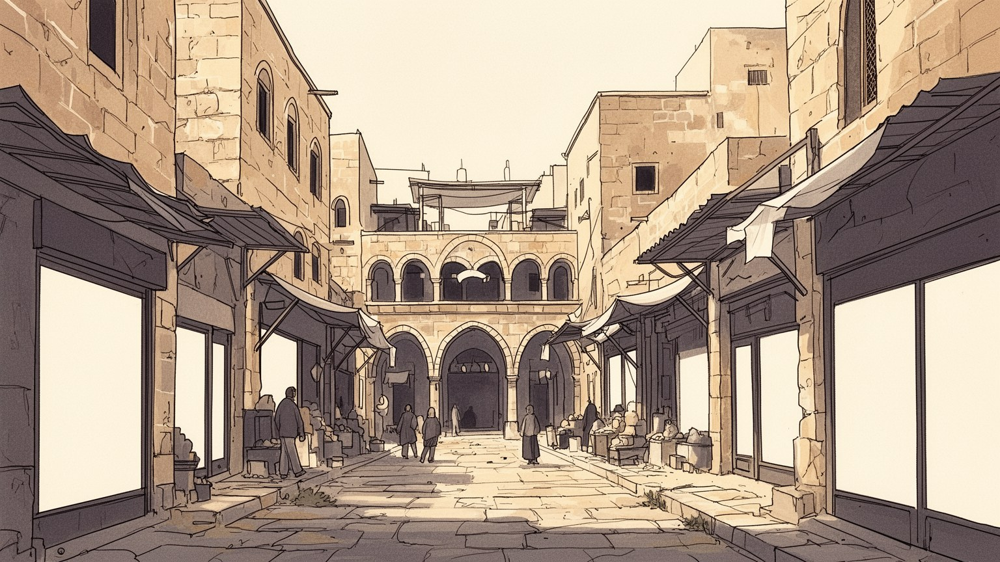
ダマスカスはシリアの首都として、官庁、治安機関、大使館、党と軍の中枢を抱えます。レバノン、ヨルダン、ゴラン高原に近く、国内戦争と地域外交の圧力が道路、検問、住宅地、商業の動きに直接現れます。境界も重い。
行政、商業、食品、繊維、観光、教育、医療、建設、運送が雇用を支えます。公的部門の賃金だけでは家計が足りず、修理、露店、送金、家族経営が重要です。復旧は仕事の量と質の差も広げます。若者の流出も響きます。
ウマイヤ・モスク、教会、スーク、旧家、中庭、聖者廟が、イスラム、キリスト教、ユダヤの記憶を重ねます。礼拝、巡礼、断食月、葬送、結婚、近所の助け合いが、歴史的建築を生活の暦へ結びます。声も香りも残ります。
旧市街やスークは強い魅力を持ちますが、住民には家賃、電力、水、物価、通勤、避難からの帰還が日々の課題です。観光は遺産だけでなく、店主、職人、家族の生活が続く条件を読む必要があります。歩く視線も問われます。
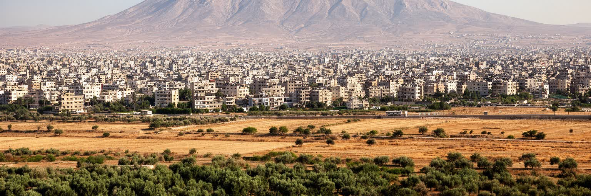
ダマスカスは砂漠の中に突然現れた都市ではなく、カシオン山の麓から流れるバラダ川と、周囲に広がるグータの農地に支えられて発達しました。川は水を運び、果樹園、畑、庭園、集落を結び、旧市街に日陰と市場を生みました。古い街路の密度は、暑さを避けるための屋根、曲がった路地、中庭住宅、泉、浴場と一体で、気候に応じた都市技術でもあります。山は都市の背後に境界を作り、峠道や郊外の展望を通じて軍事、宗教、住宅開発の場所にもなりました。近代以降、農地は住宅、道路、工場、軍事施設に押され、グータは都市の外縁ではなく、人口増加と戦争被害を受ける生活圏になりました。水路の変化や地下水の低下は、都市の記憶だけでなく、食料価格、庭の維持、衛生、避難民の住環境にも影響します。ダマスカスを読むには、旧市街の石壁だけでなく、川が細り、農地が縮み、山麓へ住宅が伸びる過程を見る必要があります。オアシスとしての基盤が弱まるほど、首都の政治や観光も不安定になります。地形は過去の背景ではなく、現在の水、住宅、交通、治安を決める生きた条件です。季節ごとの水量や郊外農地の残り方は、都市がどれだけ自分の環境を保てるかを示します。緑地が消えるほど、暑さ、砂ぼこり、食料の距離、貧しい世帯の負担が増えます。郊外の水路も都市の記憶です。今も続きます。
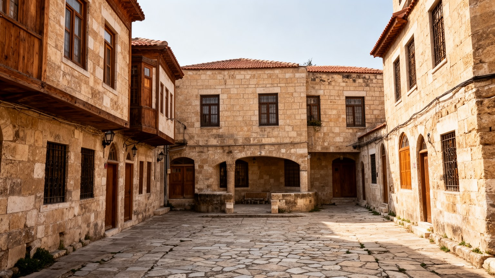
ダマスカス旧市街は、ローマ時代の街路、イスラム王朝のモスク、キリスト教地区、スーク、隊商宿、中庭住宅が重なる、都市史の厚い地層です。ウマイヤ・モスクは宗教建築として目立ちますが、その周囲には香辛料、布、菓子、金属、日用品を扱う市場が連なり、祈りと商売と観光が同じ歩行空間で交差します。直線の大通りと曲がる路地、門、狭い入口、内側に広がる家は、外からの視線と暑さを調整する生活の知恵でもあります。遺産としての価値は建物の古さだけではありません。店の継承、近所の挨拶、断食月の夜、巡礼客、結婚式、職人の音が、石造りの空間を現在の都市にしています。戦争や経済危機で客足、修理費、材料、家賃、所有権が揺らぐと、旧市街は保存された舞台ではなく、生活を続けること自体が難しい場所になります。観光客が見る美しい通路の背後には、老朽化した住宅、電力不足、水の確保、防火、交通規制の問題があります。ダマスカスの遺産を守るとは、石を磨くだけでなく、住民と商人が街を使い続けられる条件を整えることです。旧市街は博物館ではなく、現在の不安を抱えながら生きる都市の心臓です。保存が観光向けの外観に偏ると、家賃上昇や住民の退出が進みます。子どもが学校へ通い、店主が朝に戸を開け、家族が中庭で食事できることも、遺産の持続に含まれます。
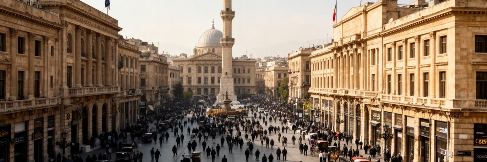
ダマスカスは文化遺産の都市であると同時に、シリア国家を動かす首都です。官庁、治安機関、軍の施設、大使館、党の建物、国営メディア、主要病院、大学が集まり、行政手続き、警備、外交、情報管理が日常の街路に表れます。首都で暮らすことは、国家との距離が近いことでもあります。身分証、徴兵、許認可、学校、病院、配給、補助金、住宅の所有権、移動の検問は、抽象的な政治ではなく、家族の予定と家計を左右する具体的な制度です。戦争期には、首都中心部の安定と周辺地区の被害が強く対比され、どの道路が通れるか、どの地域へ戻れるかが政治的な意味を帯びました。国際制裁、通貨下落、燃料不足、外交関係の変化も、官庁街だけでなく市場の値札やバスの本数に現れます。ダマスカスの地政学は国境線だけでなく、首都の内部で誰が見られ、誰が待たされ、誰が書類を得られるのかにも宿ります。政治の中心性は都市に仕事と権限を集めますが、同時に緊張、監視、格差も集めます。首都を読むとは、記念建築を見ることではなく、制度が住民の移動、沈黙、生活の選択をどのように形作るかを見ることです。大使館地区や官庁街の静けさ、検問の位置、許可を待つ列は、首都機能が街の身体に刻まれていることを示します。政治は遠いニュースではなく、通勤路と窓口の時間にあります。窓口の遅れも生活を変えます。
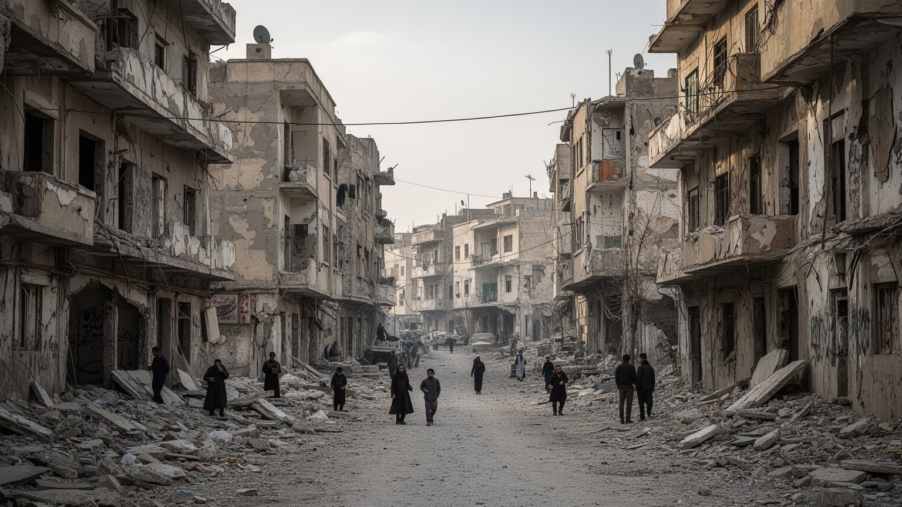
ダマスカスの戦争記憶は、中心部の旧市街だけでは読み取れません。都市の周辺には、東グータ、ヤルムーク、ダラヤ、ジョバルなど、包囲、砲撃、避難、帰還の経験を抱える地区があり、首都の生活圏は深く傷つきました。戦争は建物を壊すだけでなく、学校、病院、市場、親族の近さ、通勤路、職人の工房、子どもの記憶を断ち切ります。中心部で店が再開し、観光の写真が戻っても、周辺では所有権、瓦礫、地雷や不発弾への不安、行政手続き、帰還の条件が生活を縛ります。避難した人の多くは市内の別地区、国内他地域、国外で暮らし、戻るかどうかを仕事、安全、家族の喪失、住宅の状態で判断します。戦争の記憶は記念碑だけでなく、修理された壁、空き地、遠回りの通学、沈黙、家族写真の欠落として残ります。ダマスカスを理解するには、首都が守られたという単純な見方では足りません。守られた場所、破壊された場所、戻れた人、戻れない人の差が、都市の新しい地図を作っています。記憶を語ることは悲劇を固定することではなく、復旧の光の届かない場所を見えるようにすることです。家族の安否、行方不明者、拘束の記憶、国外へ散った親族の不在は、家の中で長く続きます。復興を語る声が明るいほど、語られない喪失にも耳を向ける必要があります。傷は世代を越えて家庭にも残ります。
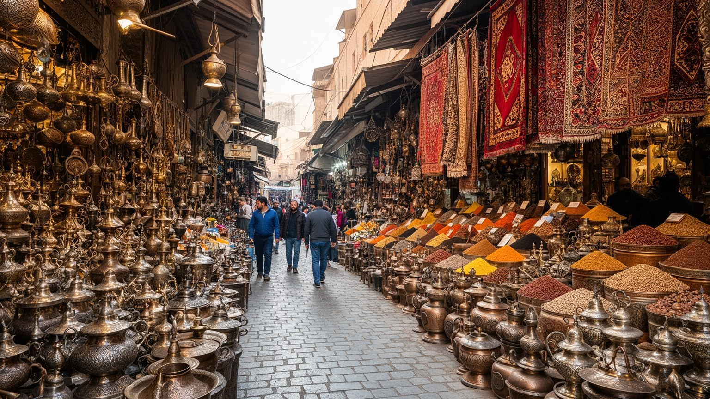
ダマスカスのスークは、観光客が歩く土産物の通路である前に、首都の日常と職人経済を支える仕事場です。ハミディーヤ市場の屋根の下には布、菓子、香水、金属器、木工、衣服、礼拝用品、家庭雑貨が並び、店主、修理職人、荷運び、菓子職人、仕立て屋、卸売業者が互いに依存しています。名高い寄木細工や金属細工、菓子、石けん、織物は、材料の調達、家族の技能、道具の維持、輸送、観光需要によって成り立ちます。経済危機と制裁、通貨下落、燃料不足は、店の棚だけでなく職人の手元を直撃します。材料が高くなれば品質を落とすか、価格を上げるか、注文を断るかを迫られます。若者が技能を継がず、国外へ出る人が増えると、市場は外観を保っても中身が薄くなります。スークの魅力は歴史的な屋根やアーチだけではありません。値段交渉の声、祈りの時間の静けさ、断食月前の買い出し、修理された道具の音が、都市の経済を細かく支えます。ダマスカスの市場を読むことは、消費の風景ではなく、家計、技能、信用、観光、政治経済が一つの通路で結ばれる仕組みを見ることです。店の奥には帳簿、親族の貸し借り、国外の客との連絡があり、商売は細い信用で続きます。市場が持続するかどうかは、観光客の数だけでなく、住民が日用品を買える価格にも左右されます。小さな店の継続が街の信頼です。
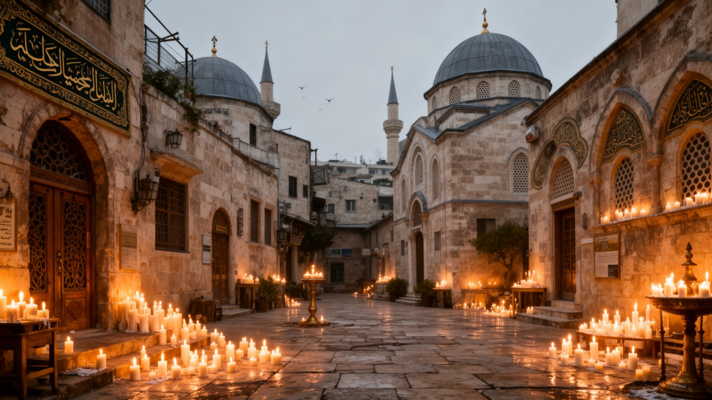
ダマスカスの宗教生活は、ウマイヤ・モスクの壮大さだけで説明できません。旧市街にはモスク、教会、聖者廟、墓地、マドラサ、修道院、巡礼の記憶が重なり、スンニ派の礼拝、シーア派巡礼、キリスト教共同体の行事、ユダヤ人地区の記憶が都市の層を作ってきました。礼拝の時間、断食月の食卓、聖人にまつわる訪問、復活祭やクリスマスの行事、結婚式、葬儀は、家族と近所を結び直す生活の暦です。宗教施設は祈る場所であると同時に、食事支援、教育、寄付、相談、避難先の紹介、葬送の手配を担うこともあります。戦争と経済危機は共同体を散らし、国外移住や地区の変化を進めましたが、儀礼は離れた人が都市を思い出す手段にもなります。宗教を観光資源としてだけ扱うと、こうした日常の役割が見えません。聖地の美しさの背後には、礼拝所を掃除する人、食事を配る人、遺族を支える人、祝祭の料理を準備する家族がいます。ダマスカスの信仰を読むことは、多宗教の記号を並べることではなく、違う記憶を持つ住民が同じ街路と市場を使い続ける条件を見ることです。祝祭の音、香、食事、喪の作法は、都市の時間を細かく区切ります。共同体が減っても、その痕跡は墓地、学校名、店の記憶、家族の語りに残り、都市の厚みを保ちます。祈りの場は支援の窓口にもなり、孤立を和らげます。今も続きます。
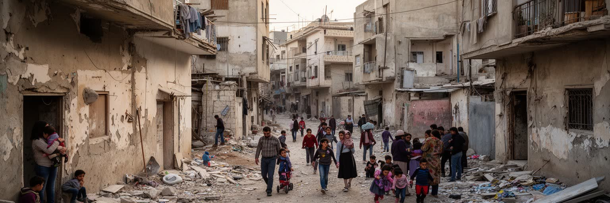
ダマスカスの住宅問題は、首都中心部の家賃と周辺地区の破壊、国内避難民の流入、国外に出た家族の不在が重なって複雑です。旧市街の中庭住宅、近代的な集合住宅、山麓の高密な住宅地、非公式な住まい、戦争で損傷した郊外は、それぞれ違う課題を抱えます。中心部では安全と仕事への近さが家賃を押し上げ、低所得世帯や学生、避難してきた家族を狭い部屋へ追い込みます。周辺では所有権の書類、修理費、インフラの復旧、治安、行政の許可が帰還を難しくします。家は寝る場所であるだけでなく、家族の記憶、商売の拠点、女性の在宅労働、子どもの勉強、親族の支援を受ける場所です。電力が不安定で水が限られれば、料理、洗濯、学習、介護の時間が大きく変わります。避難先で育った子どもにとって、ダマスカスは親の記憶として先に存在することもあります。帰還は単なる移動ではなく、学校、仕事、近所、喪失の受け止め直しです。観光地として旧市街が整っても、住民が安心して住み続けられなければ都市の回復は浅いものになります。住宅は、復興政策の成果と限界が最も具体的に現れる場所です。賃貸契約、相続、失われた書類、国外送金、親族の同居は、どれも住まいの安定を左右します。壁を直しても、近所の人が戻らず、学校や店が閉じたままなら、家は孤立した箱になります。近所も要です。
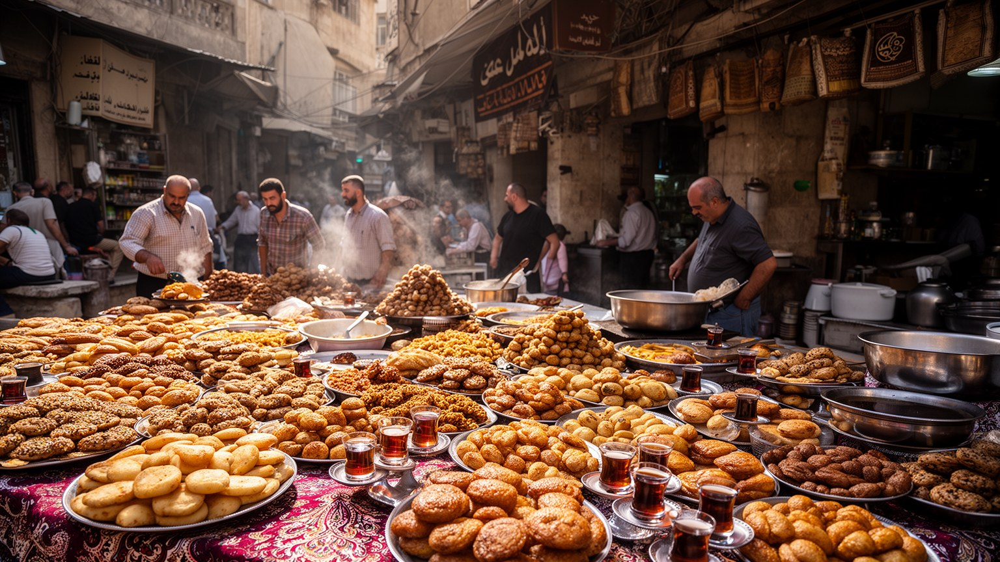
ダマスカスの日常は、政治と戦争の大きな物語だけでは見えません。朝のパン、豆料理、オリーブ、チーズ、菓子、コーヒー、断食月の夜の食卓、結婚式の料理、家族の訪問が、都市の生活リズムを作ります。ダマスカス料理はレバントの食文化の中で、米、肉、ナッツ、ヨーグルト、香草、ザクロ、果物、甘い菓子を組み合わせ、旧市街の市場とグータの農産物の記憶を抱えています。食は豊かさの象徴である一方、近年は物価高、燃料不足、停電、輸入制限、収入低下によって、何を買い、どれだけ調理し、誰を招けるかが厳しく問われます。家庭では代用品や節約が増え、外食は特別な行為になり、送金が食卓を支えることもあります。カフェや菓子店、屋台、家族経営の食堂は、人が互いの安否を確かめ、情報を交換する場所でもあります。観光客が味わう名物の背後には、早朝の仕込み、配達、燃料の確保、店員の低賃金、家族の無償労働があります。ダマスカスの食を読むことは、料理名を並べることではなく、都市が危機の中でどのように日常の形を保ち、家族と近所を結び直しているかを見ることです。食卓には離散した親族の話も集まり、写真や電話越しの会話が料理と結びつきます。味は郷愁であると同時に、今日をしのぐ家計の計算でもあります。節約の工夫も、都市文化の一部として確かに残ります。
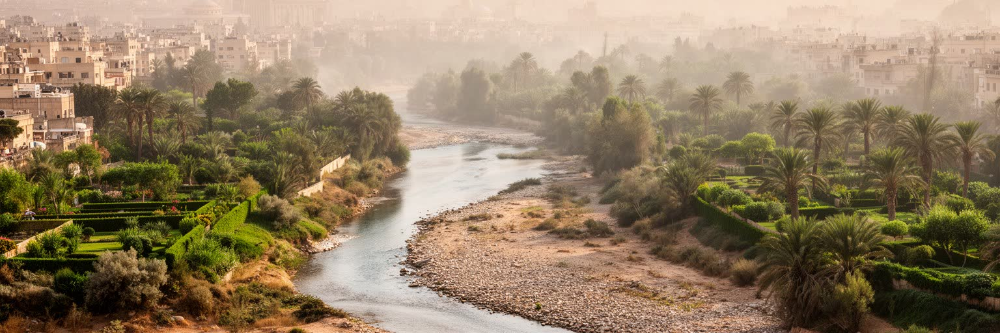
ダマスカスの気候は半乾燥で、夏は暑く乾き、冬に雨が集中します。古い都市はバラダ川と水路、庭園、中庭、厚い壁、日陰の路地によって暑さと乾燥に対応してきました。しかし人口増加、地下水利用、農地の縮小、インフラ老朽化、戦争被害、気候変動は、水を安定して得る力を弱めています。水不足は環境問題である前に、家庭の時間を変える生活問題です。断水に備えてタンクを満たす、洗濯の時間をずらす、飲み水を買う、庭の木を減らす、学校や店の衛生を心配することが日常になります。貧しい世帯ほど水を買う負担が重く、設備の悪い住宅ほど停電と断水の影響を受けます。夏の暑さは高齢者、子ども、屋外労働者、避難生活を送る人に強く作用し、電力不足は扇風機や冷蔵、医療機器にも影響します。旧市街の中庭や日陰は気候への知恵を残しますが、現代の密集住宅と交通は熱をこもらせます。ダマスカスを読むには、泉や庭園の詩的なイメージだけでなく、蛇口、水槽、ポンプ、配水管、燃料、料金を見なければなりません。水と気候は、都市の美しさと不平等を同時に映す基礎条件です。農地が減れば都市の涼しさも失われ、食料と水の距離は遠くなります。気候への適応は、大きな施設だけでなく、日陰、修理、節水、近所の融通にもかかっています。暑さへの備えも生活の平等に関わります。
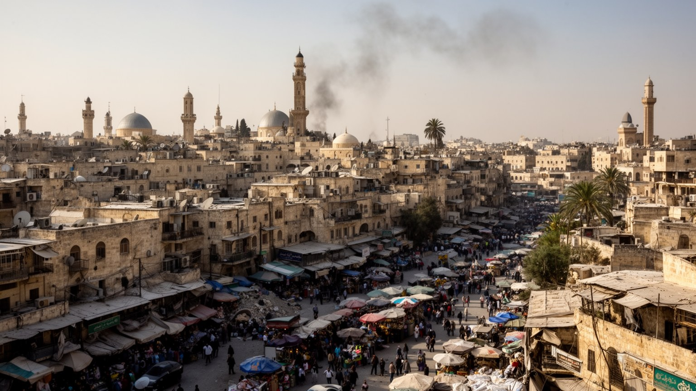
ダマスカスを世界の都市地図に置くとき、古都、首都、戦争後の都市、宗教都市、オアシス都市という複数の顔を切り離して考えることはできません。旧市街の石造りの美しさは、バラダ川とグータの水、スークの職人、宗教共同体の儀礼、首都機能、周辺地区の破壊と避難に支えられ、同時にそれらの緊張を隠してしまうこともあります。経済規模だけで見れば、長い戦争と制裁で都市の力は測りにくくなっています。しかしダマスカスの重要性は、統計の大きさだけではありません。国家権力、宗教記憶、地域外交、文化遺産、避難民の暮らし、水不足、家族経済が一つの都市圏で交わるため、現代の中東を読むための多層的な入口になります。外から訪れる人はウマイヤ・モスクやスークに惹かれますが、その背後には電力を待つ家庭、修理を続ける職人、帰還を迷う家族、物価に悩む学生、儀礼を続ける共同体があります。ダマスカスを読むことは、過去の輝きへ戻る物語ではなく、遺産と生活が同じ場所で傷つき、支え合い、時に衝突する様子を具体的に見ることです。その複雑さこそ、この都市が今も重要である理由です。都市の評価は、名所の保存や首都の権威だけでは足りません。誰が水を得られ、誰が家に戻れ、誰が市場で働き続けられるのかを重ねて見ると、ダマスカスの現在が立体的に見えてきます。